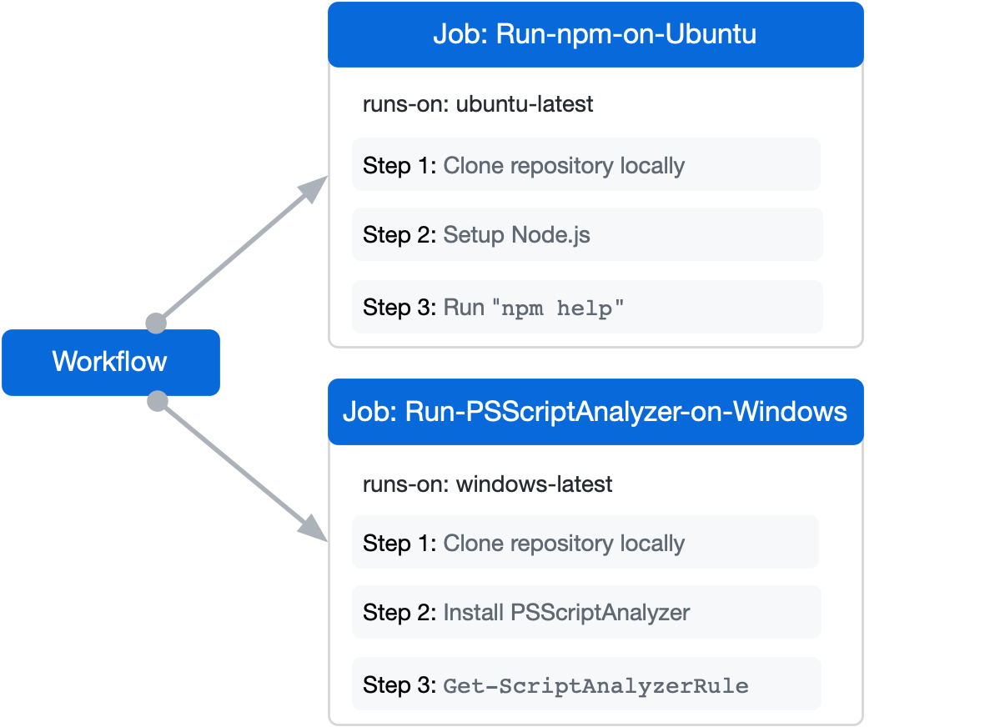
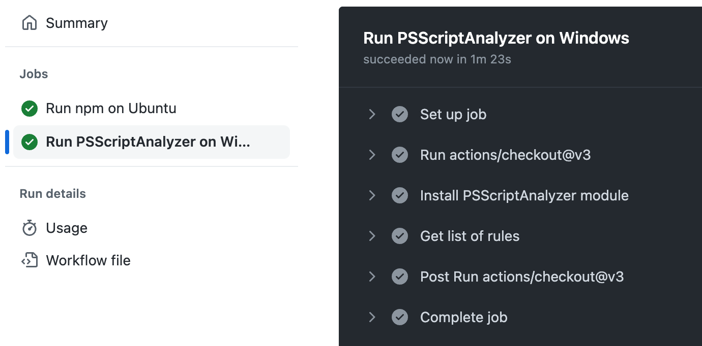

You can assign a job to run on a virtual machine hosted by GitHub.
Using a GitHub-hosted runner
To use a GitHub-hosted runner, create a job and use runs-on to specify the type of runner that will process the job, such as ubuntu-latest, windows-latest, or macos-latest. For the full list of runner types, see GitHub-hosted runners reference. If you have repo: write access to a repository, you can view a list of the runners available to use in workflows in the repository. For more information, see Viewing available runners for a repository.
When the job begins, GitHub automatically provisions a new VM for that job. All steps in the job execute on the VM, allowing the steps in that job to share information using the runner's filesystem. You can run workflows directly on the VM or in a Docker container. When the job has finished, the VM is automatically decommissioned.
The following diagram demonstrates how two jobs in a workflow are executed on two different GitHub-hosted runners.

The following example workflow has two jobs, named Run-npm-on-Ubuntu and Run-PSScriptAnalyzer-on-Windows. When this workflow is triggered, GitHub provisions a new virtual machine for each job.
The job named Run-npm-on-Ubuntu is executed on a Linux VM, because the job's runs-on: specifies ubuntu-latest.
The job named Run-PSScriptAnalyzer-on-Windows is executed on a Windows VM, because the job's runs-on: specifies windows-latest.
name: Run commands on different operating systems
on:
push:
branches: [ main ]
pull_request:
branches: [ main ]
jobs:
Run-npm-on-Ubuntu:
name: Run npm on Ubuntu
runs-on: ubuntu-latest
steps:
- uses: actions/checkout@v6
- uses: actions/setup-node@v4
with:
node-version: '14'
- run: npm help
Run-PSScriptAnalyzer-on-Windows:
name: Run PSScriptAnalyzer on Windows
runs-on: windows-latest
steps:
- uses: actions/checkout@v6
- name: Install PSScriptAnalyzer module
shell: pwsh
run: |
Set-PSRepository PSGallery -InstallationPolicy Trusted
Install-Module PSScriptAnalyzer -ErrorAction Stop
- name: Get list of rules
shell: pwsh
run: |
Get-ScriptAnalyzerRule
While the job runs, the logs and output can be viewed in the GitHub UI:

The GitHub Actions runner application is open source. You can contribute and file issues in the runner repository.
Viewing available runners for a repository
If you have repo: write access to a repository, you can view a list of the runners available to the repository.
On GitHub, navigate to the main page of the repository.
Under your repository name, click Actions.
In the left sidebar, under the "Management" section, click Runners.
Review the list of available GitHub-hosted runners for the repository.
Optionally, to copy a runner's label to use it in a workflow, click to the right of the runner, then click Copy label.
Note
Enterprise and organization owners can create runners from this page. To create a new runner, click New runner at the top right of the list of runners to add runners to the repository.